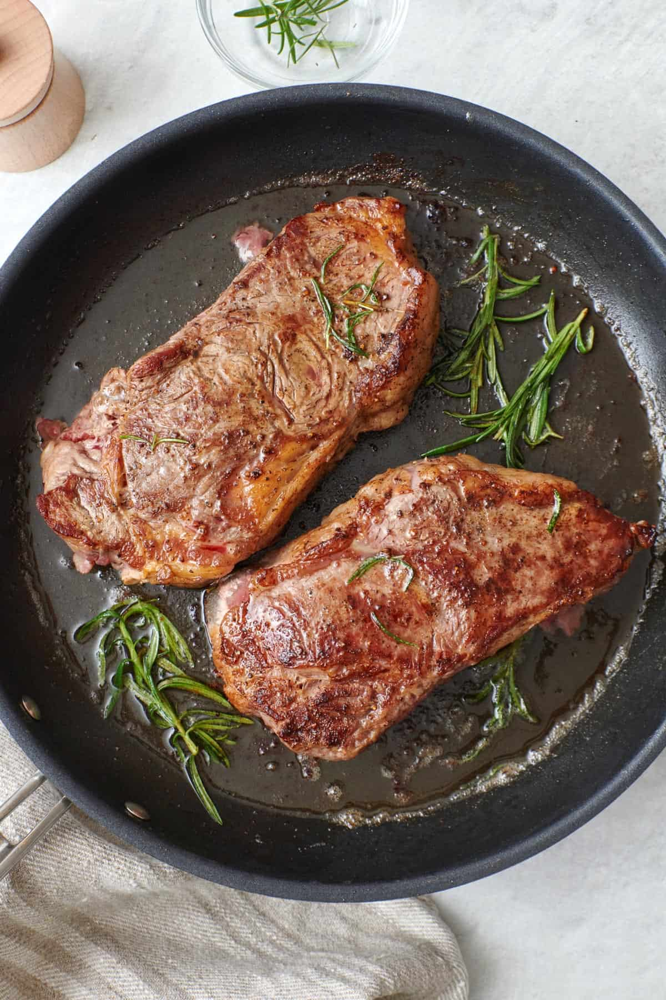

Home
Pizza

NY Striploin Steak
This recipe will help you create a delicious NY strip steak!
It doesn't require too many ingredients or prep time. It will be cooked to medium-rare (the best way to cook a steak)
Ingredients
- New York Striploin Steak (should be at least 1 inch thick)
- Kosher salt and black pepper
- Butter
Steps
- Preheat your oven to 500°F.
- Heat a well-seasoned cast iron skillet over high heat until smoking hot, 5-7 minutes. Meanwhile, sprinkle both sides of the steak with kosher salt and black pepper.
- Place the steak in the hot skillet. Cook, without moving, for 2 minutes on each side. This will create a nice crust. Then, cook the fat strip for 30 more seconds.
- Using oven mitts, transfer the skillet to the hot oven. Roast the steak to medium rare, 3-4 minutes.
- Place the steak on a plate and loosely cover it with foil. Allow it to rest for 5 minutes, then top it with butter and serve.